10 Exploratory Data Analysis with ggplot2
10.1 Introduction
In this chapter you will start learning how to create graphics in a fairly
consistent and visually pleasant way in R. To do this, we are going to use the
package "ggplot2", also originally authored by Hadley Wickham, and developed
as part of his PhD more than a decade ago.
We are assuming that you already installed the package "ggplot2". If that’s
not the case then run on the console the command below
(do NOT include this command in an Rmd file):
# don't include this command in Rmd files
# don't worry too much if you get a warning message
install.packages("ggplot2")As we mentioned before, recall that you only need to install a package once!
After a package has been installed in your machine, there is no need to call
install.packages() again on the same package. What you should always invoke,
in order to use the functions in a package, is the library() function:
# (you should include this command in your Rmd file, or other source files)
library(ggplot2)
library(dplyr) 10.1.1 Atlantic Hurricane Data
In the previous chapter, we began exploration of Atlantic Hurricane Data.
The data set comes in the R package "dplyr" under the name storms:
# data from package "dplyr"
storms
#> # A tibble: 10,010 x 13
#> name year month day hour lat long status category wind pressure
#> <chr> <dbl> <dbl> <int> <dbl> <dbl> <dbl> <chr> <ord> <int> <int>
#> 1 Amy 1975 6 27 0 27.5 -79 tropi… -1 25 1013
#> 2 Amy 1975 6 27 6 28.5 -79 tropi… -1 25 1013
#> 3 Amy 1975 6 27 12 29.5 -79 tropi… -1 25 1013
#> 4 Amy 1975 6 27 18 30.5 -79 tropi… -1 25 1013
#> 5 Amy 1975 6 28 0 31.5 -78.8 tropi… -1 25 1012
#> 6 Amy 1975 6 28 6 32.4 -78.7 tropi… -1 25 1012
#> 7 Amy 1975 6 28 12 33.3 -78 tropi… -1 25 1011
#> 8 Amy 1975 6 28 18 34 -77 tropi… -1 30 1006
#> 9 Amy 1975 6 29 0 34.4 -75.8 tropi… 0 35 1004
#> 10 Amy 1975 6 29 6 34 -74.8 tropi… 0 40 1002
#> # … with 10,000 more rows, and 2 more variables: ts_diameter <dbl>,
#> # hu_diameter <dbl>10.2 First contact with ggplot()
The package "ggplot2" is probably the most popular package in R to create
beautiful static graphics. Compared to the functions in the base package
"graphics", the package "ggplot2" follows a somewhat different philosophy,
and it tries to be more consistent and modular as possible.
The main function in
"ggplot2"isggplot().The main input to
ggplot()is a data table object (data.frameortibble).You use the internal function
aes()to specify what columns of the data table will be used as visual attributes of graphical elements in your plot.You must specify what kind of geometric objects or geoms will be displayed: e.g.
geom_point(),geom_bar(),geom_boxpot().Pretty much anything else that you want to add to your plot is controlled by auxiliary functions, especially those things that have to do with the format, rather than the underlying data, e.g.
labels(),theme().The construction of a ggplot is done by adding layers with the
+operator.
10.2.1 Barplots
Our first visualization is based on the values of column year. You can
certainly begin a visual exploration of other variables, but we think year is
a good place to start because it’s a numeric variable, measured on a discrete
scale, and this is a good candidate to use barcharts (the most popular type of
graphic).
"ggplot2" comes with a large number of functions to create almost any
type of chart. Luckily for us, it already comes with predefined
functions to graph barcharts. The syntax may seem a bit scary for beginners,
but you will see that it follows a logical structure. Here’s the code to make
a barplot of values in year:
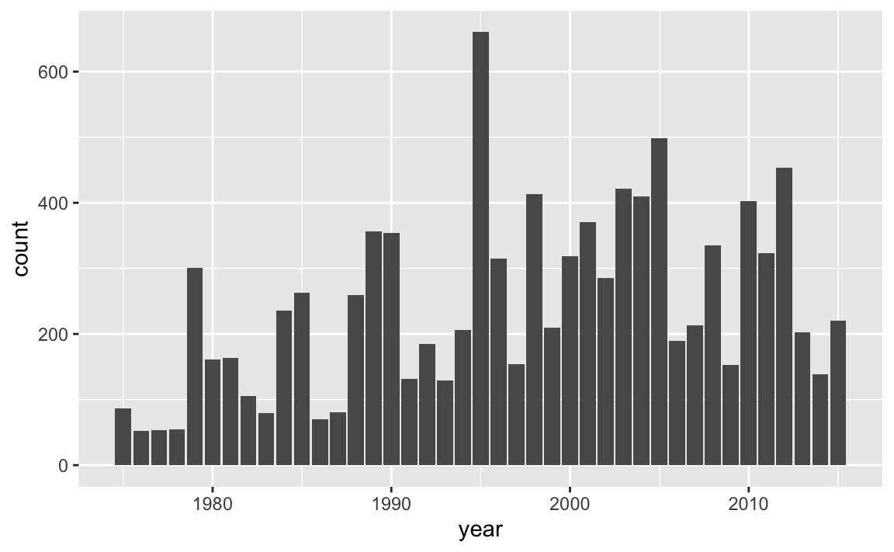
How does the previous command work? First we always call the ggplot() function,
typically indicating the name of the table to be used with the data argument.
Then, we add more components, or layers, using the plus + operator. In
this case we are adding a geom_bar() component which is the geometric object
for bars. To tell ggplot() that year is the column in data to be used for
the x-axis, we map x = year inside the aes() function which stands for
aesthetic mapping.
We should clarify that the meaning of “aesthetic” as used by "ggplot2" does
not mean beautiful or pretty, instead it conserves its etimological
meaning of perception. Simply put, aes() is the function that you use to
tell ggplot() which variables of a data object will be mapped as visual
attributes of graphical elements.
Now that we’ve created our first graphic with ggplot(), let’s spend a moment
looking at the graph, and decoding what is being displayed. Let’s focus on the
very first bar, the one that corresponds to year 1975. It seems to have a height
of a little less that 100. Actually, from last chapter, we know that
there are 86 records (or rows) for 1975. In case you are curious, here’s a
command that gives us this information:
What about 1979?
This number matches the height of the bar for 1979. Essentially, the barchart is displaying counts in the y-axis that represent the number of records for all storms in each year. While this information is somewhat interesting, a more meaningful output would be the number of storms in each year (not the total number of records per year, but the number of storms per year). Let’s tackle this problem in the next subsection.
10.2.2 Number of Storms per Year
In the previous chapter, we quickly explored the values in column year,
discovering the 41-year period or recorded data from 1975 to 2015. We can
take a further step and ask: how many storms are there in each year?
To answer this question, we need to do some data manipulation with "dplyr".
Our general recommendation when working with "dplyr"’s functions, especially
when you are learning about them, is to do computations step by step, deciding
which columns you need to use, which rows to consider, which functions to call,
and so on.
Think about the columns that we need to select to find the number of storms per
year. We obviously need year, but this column alone it’s not enough because
for any given storm we have multiple records with the same year. Therefore, we
also need column name.
For illustration purposes, we are going to build the data manipulation pipeline
step by step. As you get more comfortable with "dplyr" and other functions,
you won’t have the need to disect every single command.
A first step is to select() variables year and name:
select(storms, year, name)
#> # A tibble: 10,010 x 2
#> year name
#> <dbl> <chr>
#> 1 1975 Amy
#> 2 1975 Amy
#> 3 1975 Amy
#> 4 1975 Amy
#> 5 1975 Amy
#> 6 1975 Amy
#> 7 1975 Amy
#> 8 1975 Amy
#> 9 1975 Amy
#> 10 1975 Amy
#> # … with 10,000 more rowsNext, we need to group_by() year. At first glance, the previous output and
the output below seem identical. But notice the tiny difference: the output
below has a second line of text with some relevant information:
# Groups: year [41], telling us that the values are grouped by year.
group_by(select(storms, year, name), year)
#> # A tibble: 10,010 x 2
#> # Groups: year [41]
#> year name
#> <dbl> <chr>
#> 1 1975 Amy
#> 2 1975 Amy
#> 3 1975 Amy
#> 4 1975 Amy
#> 5 1975 Amy
#> 6 1975 Amy
#> 7 1975 Amy
#> 8 1975 Amy
#> 9 1975 Amy
#> 10 1975 Amy
#> # … with 10,000 more rowsThen, we identify the distinct() values (combination of year-name):
distinct(group_by(select(storms, year, name), year))
#> # A tibble: 426 x 2
#> # Groups: year [41]
#> year name
#> <dbl> <chr>
#> 1 1975 Amy
#> 2 1975 Caroline
#> 3 1975 Doris
#> 4 1976 Belle
#> 5 1976 Gloria
#> 6 1977 Anita
#> 7 1977 Clara
#> 8 1977 Evelyn
#> 9 1978 Amelia
#> 10 1978 Bess
#> # … with 416 more rowsFor convenience purposes, let’s assign this table into its own object,
which we can call storms_year_name
Finally, we need to count() how many storms are in each year:
count(storms_year_name, year)
#> # A tibble: 41 x 2
#> # Groups: year [41]
#> year n
#> <dbl> <int>
#> 1 1975 3
#> 2 1976 2
#> 3 1977 3
#> 4 1978 4
#> 5 1979 7
#> 6 1980 8
#> 7 1981 5
#> 8 1982 5
#> 9 1983 4
#> 10 1984 10
#> # … with 31 more rowsAll the previous commands can be assembled together with various embedded lines of code:
storms_per_year <- count(
distinct(
group_by(
select(storms, year, name),
year)
)
)
storms_per_year
#> # A tibble: 41 x 2
#> # Groups: year [41]
#> year n
#> <dbl> <int>
#> 1 1975 3
#> 2 1976 2
#> 3 1977 3
#> 4 1978 4
#> 5 1979 7
#> 6 1980 8
#> 7 1981 5
#> 8 1982 5
#> 9 1983 4
#> 10 1984 10
#> # … with 31 more rowsNow that we have the counts or frequencies, we can make our next barchart.
In this case, we will use the table storms_year_name as the input data for
ggplot():
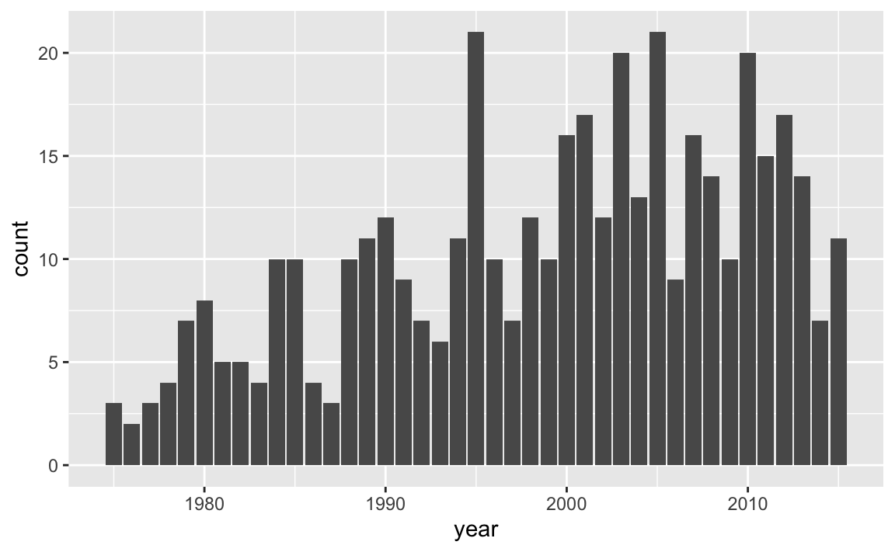
By looking at the chart, there are some fairly tall bars. Although it’s hard
to see exactly which years have a considerably large number of storms,
eyeballing things out it seems that around 1995, 2003, 2005, and 2010 there are
20 or more storms. We can find the actual answer by using arrange(),
specifying the counts to be shown in descending order—with desc():
arrange(storms_per_year, desc(n))
#> # A tibble: 41 x 2
#> # Groups: year [41]
#> year n
#> <dbl> <int>
#> 1 1995 21
#> 2 2005 21
#> 3 2003 20
#> 4 2010 20
#> 5 2001 17
#> 6 2012 17
#> 7 2000 16
#> 8 2007 16
#> 9 2011 15
#> 10 2008 14
#> # … with 31 more rowsAs you can tell, in the 41-year period from 1975 to 2015, there are two years, 1995 and 2005, with a maximum number of storms equal to 21.
10.2.3 Storms in 1975
Like we did in the previous chapter, let’s play a bit with those storms from
1975. More specifically, let’s visually explore the values of wind and
pressure.
storms75 <- filter(storms, year == 1975)
storms75
#> # A tibble: 86 x 13
#> name year month day hour lat long status category wind pressure
#> <chr> <dbl> <dbl> <int> <dbl> <dbl> <dbl> <chr> <ord> <int> <int>
#> 1 Amy 1975 6 27 0 27.5 -79 tropi… -1 25 1013
#> 2 Amy 1975 6 27 6 28.5 -79 tropi… -1 25 1013
#> 3 Amy 1975 6 27 12 29.5 -79 tropi… -1 25 1013
#> 4 Amy 1975 6 27 18 30.5 -79 tropi… -1 25 1013
#> 5 Amy 1975 6 28 0 31.5 -78.8 tropi… -1 25 1012
#> 6 Amy 1975 6 28 6 32.4 -78.7 tropi… -1 25 1012
#> 7 Amy 1975 6 28 12 33.3 -78 tropi… -1 25 1011
#> 8 Amy 1975 6 28 18 34 -77 tropi… -1 30 1006
#> 9 Amy 1975 6 29 0 34.4 -75.8 tropi… 0 35 1004
#> 10 Amy 1975 6 29 6 34 -74.8 tropi… 0 40 1002
#> # … with 76 more rows, and 2 more variables: ts_diameter <dbl>,
#> # hu_diameter <dbl>What type of visual display can we use to graph wind speed? The answer to
this question is based by determining which type of variable wind is.
You would agree with us in saying that wind is a quantitative variable. So
one graphing option can be either a histogram or a boxplot, which are
statistical charts to visualize the distribution of quantitative variables.
So let’s use geom_histogram() and see what we get. We are going to show you
a synatx of ggplot() slightly different from the one we used for the barcharts.
Carefully review the following code:
ggplot(data = storms75, aes(x = wind)) +
geom_histogram()
#> `stat_bin()` using `bins = 30`. Pick better value with `binwidth`.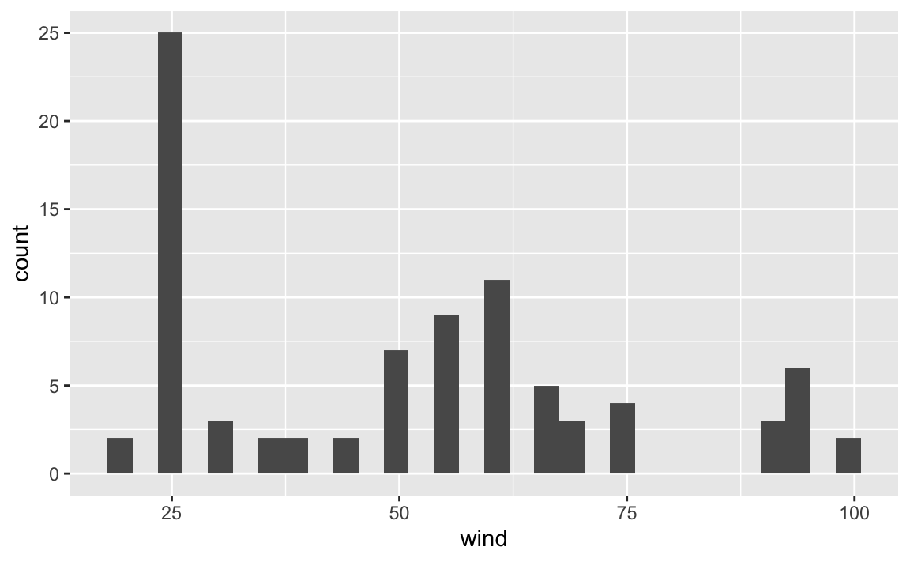
You should notice now that aes() is an argument of ggplot(), and not anymore
an argument of the geometric-object function geom_histogram(). While this
may be a bit confusing when learning about "ggplot2", it is a very flexible
and powerful behavior of aes(). Again, the important part of aes() is to
understand that this function allows you to tell ggplot() which variables
in your data table are used as visual attributes of the corresponding
geometric elements forming the plot.
We can change the default argument binwidth to get another version of the
histogram, for example a bin-width of 5 units (i.e. knots):
or a bin-width of 10:
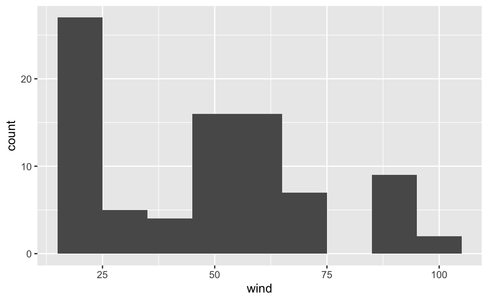
Now, let’s reflect on what’s going on in each of the histograms. Do they make sense? How do we interpret each figure?
While ggplot() does what we ask it to do, the displays may not be the most
useful, or meaningful. Why? Think what exactly it is that we are plotting.
In 1975, there are three storms:
But the histograms are not differentiating between any of those three storms.
Rather, the visualization is just giving us a general view of the wind values,
from the low 20’s to the high 90’s, or to be more precise:
summary(pull(storms75, wind))
#> Min. 1st Qu. Median Mean 3rd Qu. Max.
#> 20.0 25.0 52.5 50.9 65.0 100.0However, we don’t really know if all three storms have the same minimum wind
speed, or the same maximum wind speed. The good news is that we can tell
ggplot() to take into account each different storm name. But now let’s use
boxplots via geom_boxplot(), mapping name to the x-axis, and wind to the y-axis.
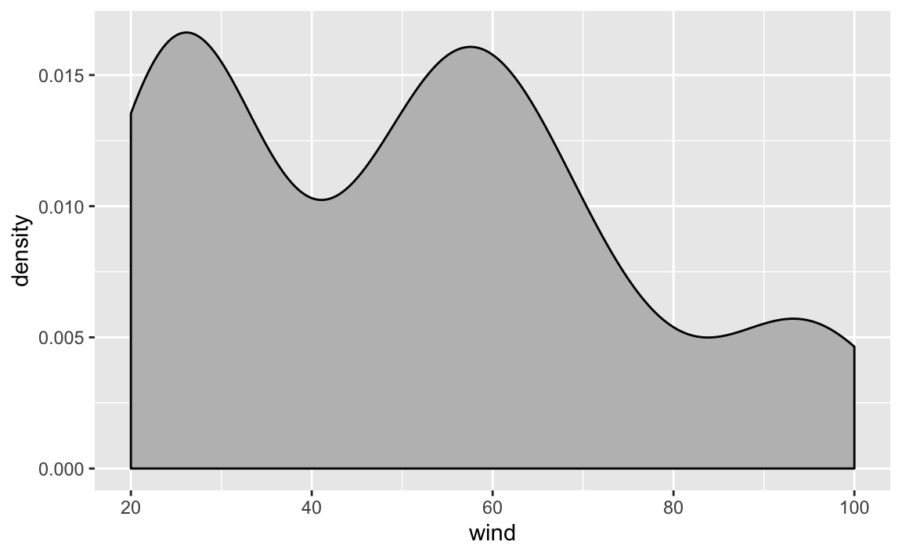
Note how different the distribution of wind speed is in each storm. We can get
an alternative plot with density curves thanks to the geom_density() function.
The syntax in this case is different. Let’s first do it without separating
storms, and then we do it taking into account the storm names.
Here’s the command that plots a density curve of wind, without distinguishing
between storms. Observe also how argument fill is set to color 'gray':
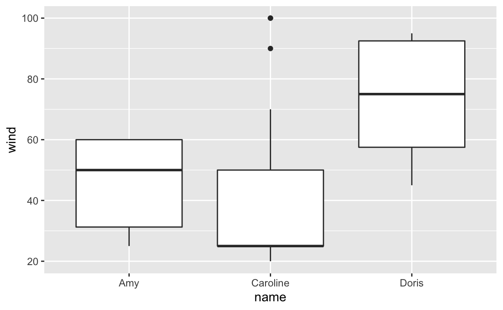
As you can tell, the density curve looks like the profile of a roller coaster,
or like the silhouette of three mountain peaks. Is this a pattern followed
by wind speed in all storms? Or is it just an artifact due to the fact that we
are plotting data without taking into consideration the context of storms75?
Let’s replot density of wind, but now distinguishing between each storm. We
do this by mapping name to the color argument:
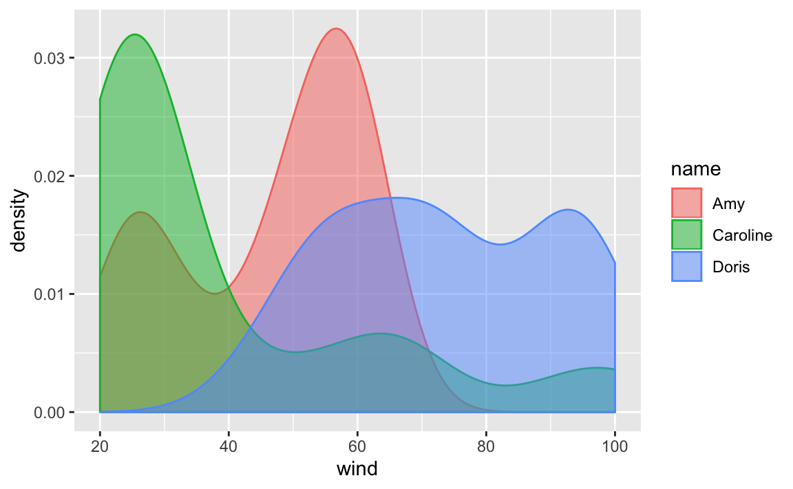
Now things look more interesting: the roller coast shape of the first call to
geom_density() turned out to be an artificial pattern. As you can tell from
the above plot, each storm has its own density curve.
To get a better visualization, we can take the previous command and add a bit
of transparency to the colors, this is done with the argument alpha inside
geom_density(). Note how arguments are specified inside geom_density():
we map name to the color-fill attribute of the curve using aes(), but
we set alpha = 0.5 outside aes():

We are going to take advantage of this graphic to introduce another cool
feature of "ggplot2" that allows us to split data based on categorical or
discrete variables, in order to produce separated frames or facets. Here’s
the command previous command—wihtout alpha transparency—adding a new
layer given by facet_wrap():
ggplot(data = storms75, aes(x = wind, color = name)) +
geom_density(aes(fill = name)) +
facet_wrap(~ name)In this command we are faceting by name, and this does is to create facets,
one for each category of name. In other words, we get separated density
curves, one for each storm. The syntax inside facet_wrap() uses the tilde
~ operator which is the formula operator in R. Basically, the command
~ name tells ggplot() to create facets based on the values of name.
10.2.4 Visual Inspection of Amy 1975
As we did it in the previous chapter, let’s focus on storm Amy in 1975,
subsetting storms75 to filter out just the rows of Amy into its own table
amy75 <- filter(storms75, name == "Amy")
amy75
#> # A tibble: 30 x 13
#> name year month day hour lat long status category wind pressure
#> <chr> <dbl> <dbl> <int> <dbl> <dbl> <dbl> <chr> <ord> <int> <int>
#> 1 Amy 1975 6 27 0 27.5 -79 tropi… -1 25 1013
#> 2 Amy 1975 6 27 6 28.5 -79 tropi… -1 25 1013
#> 3 Amy 1975 6 27 12 29.5 -79 tropi… -1 25 1013
#> 4 Amy 1975 6 27 18 30.5 -79 tropi… -1 25 1013
#> 5 Amy 1975 6 28 0 31.5 -78.8 tropi… -1 25 1012
#> 6 Amy 1975 6 28 6 32.4 -78.7 tropi… -1 25 1012
#> 7 Amy 1975 6 28 12 33.3 -78 tropi… -1 25 1011
#> 8 Amy 1975 6 28 18 34 -77 tropi… -1 30 1006
#> 9 Amy 1975 6 29 0 34.4 -75.8 tropi… 0 35 1004
#> 10 Amy 1975 6 29 6 34 -74.8 tropi… 0 40 1002
#> # … with 20 more rows, and 2 more variables: ts_diameter <dbl>,
#> # hu_diameter <dbl>Let’s keep exploring wind but now let’s do it chronologically, that is,
graphing the wind values in the order that they were recorded (recall storms
are tracked every six hours). We begin with a scatterplot using geom_point(),
and we specify that the x-axis should use a numeric sequence from the first
row till the last row of amy75, and wind for y-axis:
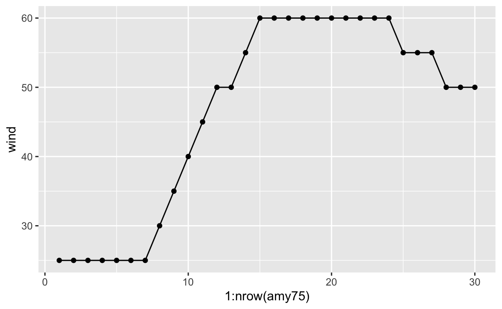
Becasue the x-axis denotes progression over time, we can connect the dots
with a line. A simple way to do this is by adding another layer to our plot,
this time with geom_line()
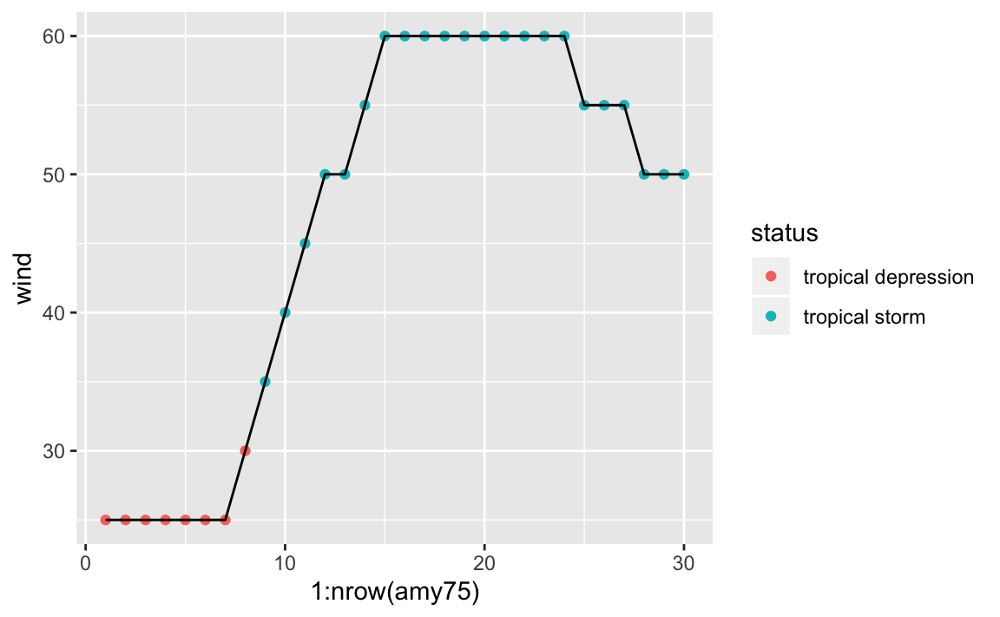
As you can tell, Amy started to being recorded with wind speed of 25 knots, and then after 42 hours (7 x 6) its speed kept increasing to 30, 35, 40, and so on until reaching its maximum speed of 60 knots that lasted 54 hours (9 x 6).
At this point, we can ask about the status of Amy along its lifetime. One
option is to map status to the color attribute of points:
ggplot(data = amy75, aes(x = 1:nrow(amy75), y = wind)) +
geom_point(aes(color = status)) +
geom_line()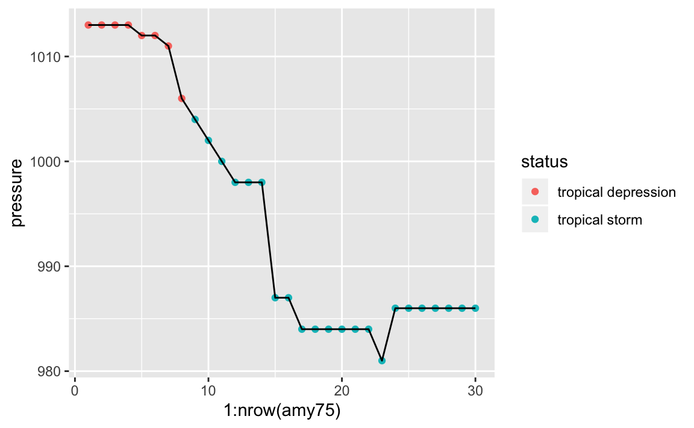
We see that Amy started as a tropical depression, and then became a tropical storm, but never became a hurricane. For a storm to reach hurricane status, of category 1, it must have one-minute maximum sustained winds of at least 64 kn (33 m/s; 74 mph; 119 km/h).
What about the pressue values fo Amy? We can produce a similar scatterplot with a line connecting the dots:
ggplot(data = amy75, aes(x = 1:nrow(amy75), y = pressure)) +
geom_point(aes(color = status)) +
geom_line()As an exploratory exercise, we can also play with the size of points, the
size (width) of lines, colors, etc. Here’s one suggestion graphing pressure
and taking into account the wind speed reflected in the size of points and
line segments:
ggplot(data = amy75, aes(x = 1:nrow(amy75), y = pressure)) +
geom_line(aes(size = wind), lineend = "round", color = 'gray70') +
geom_point(aes(size = wind, color = status))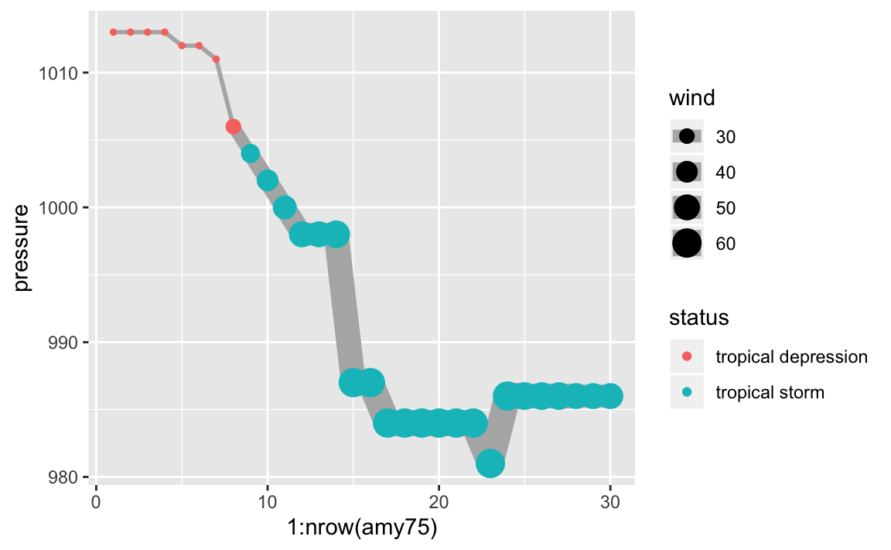
If you know a little bit about storms, you know there’s actually an association
between wind and pressure. But let’s pretend for a second that we don’t
know much about tropical storms, hurricanes, and things like that. By looking
at the previous chart, this should allows us to guess that something is going
on between the pressure of a storm and its wind speed. As Amy becomes
stronger, with higher winds, its pressure levels drop accordingly, suggesting
a negative correlation, which is confirmed when we compute this statistic:
10.3 Exercises
1) Use "ggplot2" functions to make a single scatterplot of wind and
pressure for all storms. Use category to add color to the dots.
2) Use "ggplot2" functions to make a scatterplot of wind and pressure
for all storms, facetting by month, and using category to differentiate by
color.
3) Use "ggplot2" functions to make a scatterplot of wind and pressure
for all storms, but now create facets based on month. Feel free to add
some amount of alpha transparency to the color of dots.
4) Create boxplots of pressure, for storms in 1980. You can also try
graphing violins (geom_violin()) instead of boxplots (geom_boxplot()).
5) Make a scatterplot of wind (x-axis) and ts_diameter (y-axis), and add
a regression line—via geom_smooth().
Try
geom_smooth()withmethod = lmto fit a least squares regression line.Try
geom_smooth()withmethod = loessto fit a local polynomial regression.
6) Repeat the previous scatterplot of wind (x-axis) and ts_diameter (y-axis),
but now use status to color code the points, and use the alpha argument to
add some transparency to the dots.
7) Take a look at the cheatsheet of "ggplot2" and make at least 5 more
different graphs (e.g. of one variable, of two variables, of three variables).